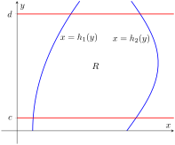
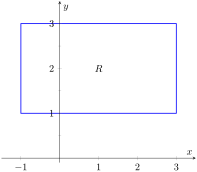
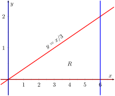
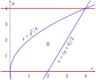
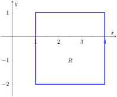
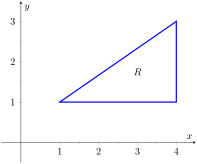
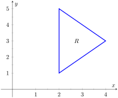
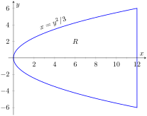
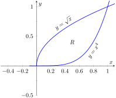
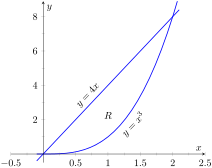

In Section 13.3 we found that it was useful to differentiate functions of several variables with respect to one variable, while treating all the other variables as constants or coefficients. We can integrate functions of several variables in a similar way. For instance, if we are told that \(f_x(x,y) = 2xy\text{,}\) we can treat \(y\) as staying constant and integrate to obtain \(f(x,y)\text{:}\)
Make a careful note about the constant of integration, \(C\text{.}\) This “constant” is something with a derivative of \(0\) with respect to \(x\text{,}\) so it could be any expression that contains only constants and functions of \(y\text{.}\) For instance, if \(f(x,y) = x^2y+ \sin(y) + y^3 + 17\text{,}\) then \(f_x(x,y) = 2xy\text{.}\) To signify that \(C\) is actually a function of \(y\text{,}\) we write:
\begin{equation*}
\int_{g_1(x)}^{g_2(x)} f_y(x,y)\, dy = f(x,y)\Big|_{g_1(x)}^{g_2(x)} = f\big(x,g_2(x)\big)-f\big(x,g_1(x)\big)\text{.}
\end{equation*}
Note that when integrating with respect to \(x\text{,}\) the bounds are functions of \(y\) (of the form \(x=h_1(y)\) and \(x=h_2(y)\)) and the final result is also a function of \(y\text{.}\) When integrating with respect to \(y\text{,}\) the bounds are functions of \(x\) (of the form \(y=g_1(x)\) and \(y=g_2(x)\)) and the final result is a function of \(x\text{.}\) Another example will help us understand this.
Example14.1.2.Integrating functions of more than one variable.
Note how the bounds of the integral are from \(y=1\) to \(y=x\) and that the final answer is a function of \(x\text{.}\)
In the previous example, we integrated a function with respect to \(y\) and ended up with a function of \(x\text{.}\) We can integrate this as well. This process is known as iterated integration, or multiple integration.
Note how the bounds of \(x\) were \(x=1\) to \(x=2\) and the final result was a number.
The previous example showed how we could perform something called an iterated integral; we do not yet know why we would be interested in doing so nor what the result, such as the number \(89/8\text{,}\)means. Before we investigate these questions, we offer some definitions.
Definition14.1.4.Iterated Integration.
Iterated integration is the process of repeatedly integrating the results of previous integrations. Evaulating one integral is denoted as follows.
Let \(a\text{,}\)\(b\text{,}\)\(c\) and \(d\) be numbers and let \(g_1(x)\text{,}\)\(g_2(x)\text{,}\)\(h_1(y)\) and \(h_2(y)\) be functions of \(x\) and \(y\text{,}\) respectively. Then:
\(\ds \int_c^d\int_{h_1(y)}^{h_2(y)} f(x,y)\, dx\, dy = \int_c^d\left(\int_{h_1(y)}^{h_2(y)} f(x,y)\, dx\right) dy\text{.}\)
Again make note of the bounds of these iterated integrals.
With \(\ds \int_c^d\int_{h_1(y)}^{h_2(y)} f(x,y)\, dx\, dy\text{,}\)\(x\) varies from \(h_1(y)\) to \(h_2(y)\text{,}\) whereas \(y\) varies from \(c\) to \(d\text{.}\) That is, the bounds of \(x\) are curves, the curves \(x=h_1(y)\) and \(x=h_2(y)\text{,}\) whereas the bounds of \(y\) are constants, \(y=c\) and \(y=d\text{.}\) It is useful to remember that when setting up and evaluating such iterated integrals, we integrate “from curve to curve, then from point to point.”
We now begin to investigate why we are interested in iterated integrals and what they mean.
Subsection14.1.2Area of a plane region
Consider the plane region \(R\) bounded by \(a\leq x\leq b\) and \(g_1(x)\leq y\leq g_2(x)\text{,}\) shown in Figure 14.1.5. We learned in Section 7.1 that the area of \(R\) is given by
Figure14.1.5.Calculating the area of a plane region \(R\) with an iterated integral
We can view the expression \(\big(g_2(x)-g_1(x)\big)\) as
\begin{equation*}
\big(g_2(x)-g_1(x)\big) = \int_{g_1(x)}^{g_2(x)} 1\, dy =\int_{g_1(x)}^{g_2(x)} \, dy\text{,}
\end{equation*}
meaning we can express the area of \(R\) as an iterated integral:
\begin{equation*}
\text{ area of } R = \int_a^b \big(g_2(x)-g_1(x)\big)\, dx = \int_a^b\left(\int_{g_1(x)}^{g_2(x)} \, dy\right) dx =\int_a^b\int_{g_1(x)}^{g_2(x)} \, dy\, dx\text{.}
\end{equation*}
In short: a certain iterated integral can be viewed as giving the area of a plane region.
A region \(R\) could also be defined by \(c\leq y\leq d\) and \(h_1(y)\leq x\leq h_2(y)\text{,}\) as shown in Figure 14.1.6. Using a process similar to that above, we have
\begin{equation*}
\text{ the area of } R = \int_c^d\int_{h_1(y)}^{h_2(y)} \, dx\, dy\text{.}
\end{equation*}

Figure14.1.6.Calculating the area of a plane region \(R\) with an iterated integral
We state this formally in a theorem.
Theorem14.1.7.Area of a plane region.
Let \(R\) be a plane region bounded by \(a\leq x\leq b\) and \(g_1(x)\leq y\leq g_2(x)\text{,}\) where \(g_1\) and \(g_2\) are continuous functions on \([a,b]\text{.}\) The area \(A\) of \(R\) is
\begin{equation*}
A = \int_a^b\int_{g_1(x)}^{g_2(x)} \, dy\, dx\text{.}
\end{equation*}
Let \(R\) be a plane region bounded by \(c\leq y\leq d\) and \(h_1(y)\leq x\leq h_2(y)\text{,}\) where \(h_1\) and \(h_2\) are continuous functions on \([c,d]\text{.}\) The area \(A\) of \(R\) is
\begin{equation*}
A = \int_c^d\int_{h_1(y)}^{h_2(y)} \, dx\, dy\text{.}
\end{equation*}
The following examples should help us understand this theorem.
Example14.1.8.Area of a rectangle.
Find the area \(A\) of the rectangle with corners \((-1,1)\) and \((3,3)\text{,}\) as shown in Figure 14.1.9.

Figure14.1.9.Calculating the area of a rectangle with an iterated integral in Example 14.1.8
The triangle is bounded by the lines as shown in the figure. Choosing to integrate with respect to \(x\) first gives that \(x\) is bounded by \(x=y\) to \(x = \frac{y+5}2\text{,}\) while \(y\) is bounded by \(y=1\) to \(y=5\text{.}\) (Recall that since \(x\)-values increase from left to right, the leftmost curve, \(x=y\text{,}\) is the lower bound and the rightmost curve, \(x=(y+5)/2\text{,}\) is the upper bound.) The area is
We can also find the area by integrating with respect to \(y\) first. In this situation, though, we have two functions that act as the lower bound for the region \(R\text{,}\)\(y=1\) and \(y=2x-5\text{.}\) This requires us to use two iterated integrals. Note how the \(x\)-bounds are different for each integral:
\begin{equation*}
\int_0^4\int_{y/2}^{\sqrt{y}} 1\, dx\, dy = \int_0^4 (\sqrt{y}-y/2)\, dy = \left(\frac23y^{3/2} - \frac14y^2\right)\Big|_0^4 = \frac43\text{.}
\end{equation*}
Subsection14.1.3Changing Order of Integration
In each of the previous examples, we have been given a region \(R\) and found the bounds needed to find the area of \(R\) using both orders of integration. We integrated using both orders of integration to demonstrate their equality.
We now approach the skill of describing a region using both orders of integration from a different perspective. Instead of starting with a region and creating iterated integrals, we will start with an iterated integral and rewrite it in the other integration order. To do so, we'll need to understand the region over which we are integrating.
The simplest of all cases is when both integrals are bound by constants. The region described by these bounds is a rectangle (see Example 14.1.8), and so:
When the inner integral's bounds are not constants, it is generally very useful to sketch the bounds to determine what the region we are integrating over looks like. From the sketch we can then rewrite the integral with the other order of integration.
Examples will help us develop this skill.
Example14.1.14.Changing the order of integration.
Rewrite the iterated integral \(\ds \int_0^6\int_0^{x/3} 1\, dy\, dx\) with the order of integration \(dx\, dy\text{.}\)
We need to use the bounds of integration to determine the region we are integrating over.
The bounds tell us that \(y\) is bounded by \(0\) and \(x/3\text{;}\)\(x\) is bounded by 0 and 6. We plot these four curves: \(y=0\text{,}\)\(y=x/3\text{,}\)\(x=0\) and \(x=6\) to find the region described by the bounds. Figure 14.1.15 shows these curves, indicating that \(R\) is a triangle.

Figure14.1.15.Sketching the region \(R\) described by the iterated integral in Example 14.1.14
To change the order of integration, we need to consider the curves that bound the \(x\)-values. We see that the lower bound is \(x=3y\) and the upper bound is \(x=6\text{.}\) The bounds on \(y\) are \(0\) to \(2\text{.}\) Thus we can rewrite the integral as \(\ds \int_0^2\int_{3y}^6 1\, dx \, dy\text{.}\)
Example14.1.16.Changing the order of integration.
Change the order of integration of \(\ds\int_0^4\int_{y^2/4}^{(y+4)/2}1\, dx\, dy\text{.}\)
We sketch the region described by the bounds to help us change the integration order. \(x\) is bounded below and above (i.e., to the left and right) by \(x=y^2/4\) and \(x=(y+4)/2\) respectively, and \(y\) is bounded between 0 and 4. Graphing the previous curves, we find the region \(R\) to be that shown in Figure 14.1.17.

Figure14.1.17.Drawing the region determined by the bounds of integration in Example 14.1.16
To change the order of integration, we need to establish curves that bound \(y\text{.}\) The figure makes it clear that there are two lower bounds for \(y\text{:}\)\(y=0\) on \(0\leq x\leq 2\text{,}\) and \(y=2x-4\) on \(2\leq x\leq 4\text{.}\) Thus we need two double integrals. The upper bound for each is \(y=2\sqrt{x}\text{.}\) Thus we have
This section has introduced a new concept, the iterated integral. We developed one application for iterated integration: area between curves. However, this is not new, for we already know how to find areas bounded by curves.
In the next section we apply iterated integration to solve problems we currently do not know how to handle. The “real” goal of this section was not to learn a new way of computing area. Rather, our goal was to learn how to define a region in the plane using the bounds of an iterated integral. That skill is very important in the following sections.
Exercises14.1.4Exercises
Terms and Concepts
1.
When integrating \(f_x(x,y)\) with respect to \(x\text{,}\) the constant of integration \(C\) is really which: \(C(x)\) or \(C(y)\text{?}\) What does this mean?
2.
Evaluating a double integral in steps is called .
3.
When evaluating an iterated integral, we integrate from to , then from to .
4.
One understanding of an iterated integral is that \(\ds \int_a^b\int_{g_1(x)}^{g_2(x)} \, dy\, dx\) gives the of a plane region.
Problems
Exercise Group.
In the following exercises, evaluate the integral and subsequent iterated integral.
In the following exercises, a graph of a planar region \(R\) is given. Give the iterated integrals, with both orders of integration \(dy\, dx\) and \(dx\, dy\text{,}\) that give the area of \(R\text{.}\) Evaluate one of the iterated integrals to find the area.
11.

12.

13.

14.

15.

16.

Exercise Group.
In the following exercises, iterated integrals are given that compute the area of a region \(R\) in the \(xy\)-plane. Sketch the region \(R\text{,}\) and give the iterated integral(s) that give the area of \(R\) with the opposite order of integration.
17.
\(\ds \int_{-2}^2\int_0^{4-x^2} \, dy \, dx\)
18.
\(\ds \int_{0}^{1}\int_{5-5x}^{5-5x^2} \, dy \, dx\)